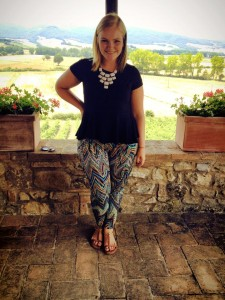
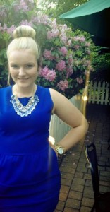

Carolyn C. Mullen
Blog
Your Everyday Girl With a Self Diagnosed Necklace Obsession.

Hello readers and fellow fashion lovers. My name is Carolyn and I am self diagnosed necklace obsessed. In the past two years of college I have developed a love for statement jewelry with my main focus being statement necklaces. Within my closet at school hangs approximately 35 necklaces with more on the way. Through daily outfit posts, occasional videos and weekly blogs I will share with you how to add statement pieces into your wardrobe. I am a current communication studies major at Saint Joseph’s University and style editor for HerCampusSJU.